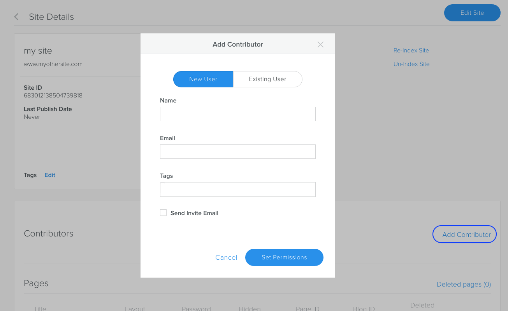
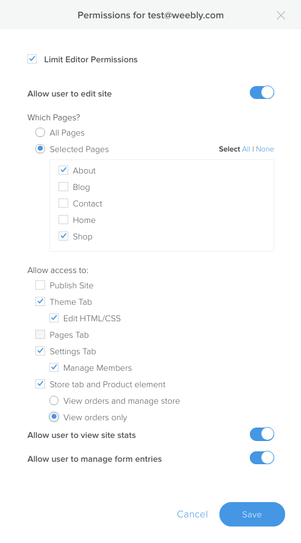
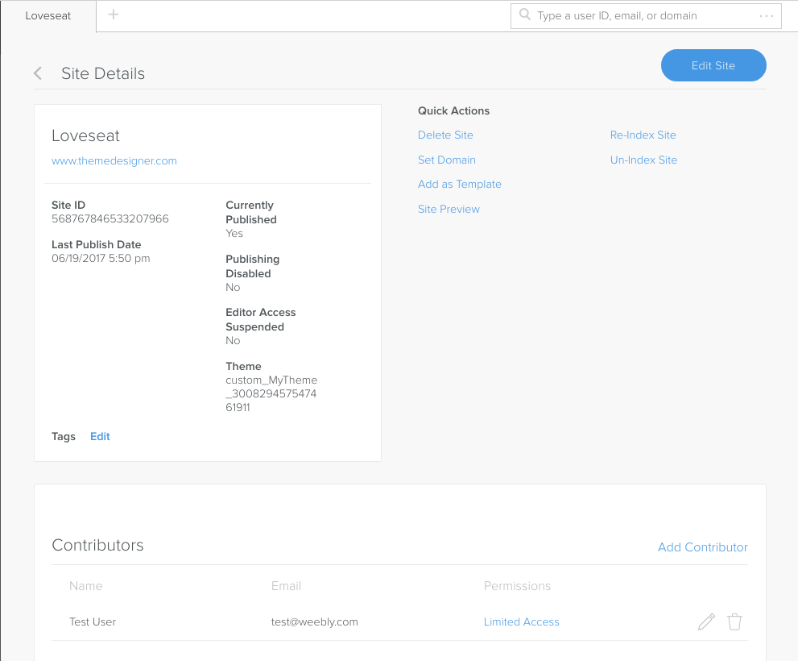

Once you create a site, you can add site contributors - users that have varying access to edit that site and some of the site's settings.
What are Site Contributors?
Site contributors are users that have access to edit and manage a site, but are not owners of the site. For example, you might set up a client as a contributor to their site so that they can manage their store, but not edit or publish the site. Or you might provide access to certain pages to a team member at your company.
Site contributors can have one of two levels of access:
Admin: The contributor can do everything.
Limited: The contributor can only access the specific functionality (like editing specific pages, ability to publish the site, ability to change settings) that is assigned to them.
Create Site Contributors
You add site contributors in Cloud Admin, from the Site Detail page.
To add a site contributor:
In the Cloud Admin, from the client’s detail page, select a site.
On the site’s detail page, click Add Contributor.
Choose to either create a new user or select an existing user. If you want to add a client as a contributor, you need to create them as a new user. If you want to add a Team Member that has already been created in the Cloud Admin, then select Existing User and search for them by email.

Adding a contributor
4. Click Set Permissions and either give them full permission to the site (by not selecting Limit Editor Permissions), or set explicit permissions by selecting that checkbox and then configuring access:

Contributor permissions
The contributor is now listed on the site’s detail page.

Contributor on the site's detail page
Manage Site Contributors
Once created, you can change a contributor’s permissions or you can delete them as a contributor. Deleting a contributor only deletes that person’s access to the site.
To manage a contributor:
In the Cloud Admin, search for or browse to the site that they contribute to.
To change permissions, in the Contributors area, click the Edit icon for the contributor and edit the permissions.